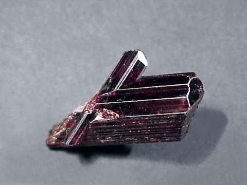

New here?

New to rockhounding and don't know where to start? Not to worry, we will show you the ropes. Click below to head over to our "Getting Started" guide
Getting StartedRocks & Minerals In Virginia


Virginia boasts diverse rockhounding opportunities, with popular locations such as the Morefield Mine, known for its amazonite and other minerals, and the James River area, where you can find a variety of fossils. The state is also home to minerals like garnet, kyanite, and tourmaline, providing a range of fascinating finds for rock collectors.
Sponsored Dig Site

Own a digsite you would like to advertize in Virginia? Contact us for more information about being our sponsor of the month! Email sponsors@rockhounding.org for more information.
Dig With UsPopular Rocks In Virginia
-
 Amazonite
AmazoniteAmazonite, a green variety of microcline feldspar, can be found in Virginia's Amelia and Fairfax counties, with the Morefield Mine being a popular destination for rockhounding enthusiasts.
Read More -
 Amethyst
AmethystAmethyst, a purple variety of quartz, can be found in Virginia, particularly in the Blue Ridge Mountains and Shenandoah Valley, where rockhounds can visit gem mines and search for these crystals.
Read More -
 Garnet
GarnetGarnet, a group of silicate minerals, can be found in Virginia's metamorphic rocks, particularly in the Blue Ridge Mountains, where rockhounds can discover various shades of red and green garnets.
Read More -
 Gold
GoldGold can be found in Virginia, especially in the Virginia Gold-Pyrite Belt, a region that stretches through the central part of the state and has a history of gold mining dating back to the early 1800s.
Read More -

Rutile
Rutile, a reddish-brown to black titanium dioxide mineral, can be found in Virginia, especially in the Appalachian Mountains, where it occurs in quartz veins and metamorphic rocks.
Read More -
 Kyanite
KyaniteKyanite, a blue aluminum silicate mineral, is found in Virginia's Blue Ridge Mountains, where the Willis Mountain Kyanite Mine offers rockhounds the chance to search for this unique mineral.
Read More -
 Tourmaline
TourmalineTourmaline, a group of boron silicate minerals, can be found in Virginia's pegmatite deposits, where rockhounds can discover a variety of colors, including black, green, and pink tourmaline.
Read More -
 Trilobite Fossils
Trilobite FossilsTrilobite fossils can be found in Virginia, particularly in the western regions of the state, where ancient marine environments have left behind fascinating remains of these prehistoric creatures.
Read More
Popular Areas In Virginia
-
 Morefield Gem Mine
Morefield Gem MineLocated in Amelia County, the Morefield Gem Mine is famous for its amazonite, topaz, and smoky quartz finds. Visitors can search for these beautiful gems and take home their discoveries.
Read More -
Virginia Gold-Pyrite Belt
The Virginia Gold-Pyrite Belt is a region rich in gold and pyrite deposits. Prospectors can find abandoned mines and dig sites to search for these valuable minerals.
Read More -
Carmel Church Quarry
The Carmel Church Quarry in Caroline County is a hotspot for marine fossils from the Miocene era. Fossil hunters can find shark teeth, whale bones, and various other marine fossils here.
Read More -
Wise County
Wise County is known for its coal and mineral deposits. Rockhounds can find a variety of minerals including quartz, calcite, and pyrite in this region.
Read More -
Willis Mountain Kyanite Mine
Located in Buckingham County, the Willis Mountain Kyanite Mine is home to some of the finest kyanite specimens. Visitors can explore the mine and search for this beautiful blue mineral.
Read More -
Shenandoah Valley
The Shenandoah Valley is a beautiful region known for its limestone formations and caverns. Rockhounds can find calcite, dolomite, and other minerals in this picturesque area.
Read More
Geology of Virginia
Virginia's geology is diverse, with ancient crystalline rocks in the Blue Ridge and Piedmont regions and younger sedimentary rocks, including limestone, shale, and sandstone, in the Coastal Plain and Valley and Ridge regions. The state is home to the Appalachian Mountains, which stretch from Georgia to Pennsylvania.
Virginia is known for its mineral wealth, including coal, kyanite, and gold, as well as its gemstones such as garnet, tourmaline, and amethyst. The state is also famous for its diverse fossil deposits, particularly in the Valley and Ridge region and along the coast.
Rockhounding in Virginia offers a range of opportunities, from exploring the state's rich mineral and gemstone resources to hunting for fossils in the Valley and Ridge and other geologically interesting areas.